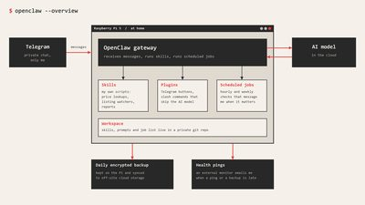
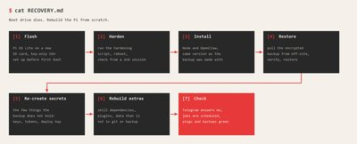

$ cd ~/projects/openclaw
> OpenClaw_
Oct 2026 - present
OpenClaw is an AI assistant that you talk to through a chat app. Mine runs on a Raspberry Pi 5 at home and I reach it through Telegram. It answers my questions, runs checks on a schedule and messages me when something needs my attention. The bot only talks to my own account and can't be added to groups.
The useful part is the skills. I write them myself, as small scripts that OpenClaw can run:
- looking up the price of an arcade game in a price guide, and sending the cabinet photo along
- watching marketplaces and web shops, and alerting me to new listings or restocks
- checking fuel prices, travel time and traffic on request
- weekly reports on my Home Assistant data
Two small plugins add Telegram buttons and a slash command that answers without calling the AI model at all, so it's instant. Voice messages get transcribed too. An earlier skill messaged me to ask how to categorise payments it didn't recognise. I've since retired it.

A bot that can run commands on a computer at home needs some care, so I locked the Pi down: key-only SSH, automatic security updates and a Telegram bot that only answers me. A hardware watchdog restarts the Pi when it freezes, and a memory limit stops OpenClaw from eating all of it. An external monitor emails me when the Pi or its backup goes quiet.
In October the Pi started hanging. OpenClaw went silent on Telegram, and a power cycle fixed it a few times, until it no longer did. I turned on persistent logs, then tested the SSD through two different SATA-to-USB adapters on my PC. Neither adapter was ever detected, while a USB stick in the same port worked at once. So the SSD was dead.
I rebuilt the Pi on an SD card and set up daily encrypted backups that are copied to cloud storage as well. I also wrote the rebuild down as a step-by-step runbook, with one route that restores from a backup and one that starts from scratch.
